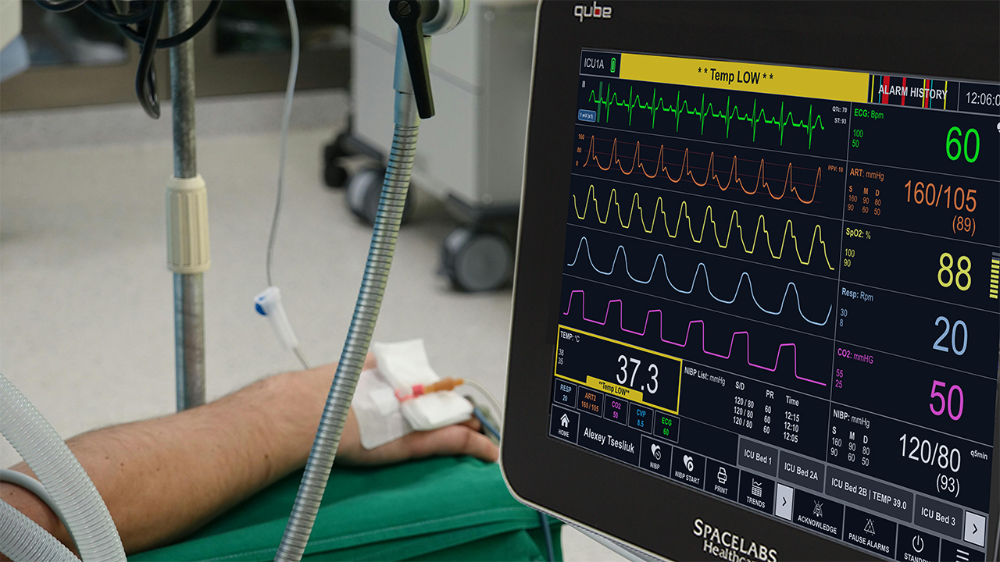

HELLO, I'M BRAD
UX Designer focused on building intuitive, scalable enterprise and product experiences
I translate research and business requirements into clear, usable designs across web and mobile platforms.
Featured Work
Selected Case Studies

Healthcare / Mobile
Rothman Index Mobile App
Real-time patient acuity monitoring for clinical teams on the go

Healthcare / Product Design
Rainer Monitor Platform
Redesigning a patient monitoring platform for modern clinical workflows

Enterprise / Dashboard
Rothman Index Analytics Dashboard
Enterprise reporting tool for hospital administrators and quality teams
Approach
How I Work
- Start with research(ask questions), not assumptions
- Show wireframes and iterations, not just final screens
- Design within real technical and business constraints
- Collaborate daily with PMs and Engineers
- Validate decisions with usability testing
- Deliver dev-ready specs or seat with engineers to refine codebase, not just mockup hand offs.
Skills